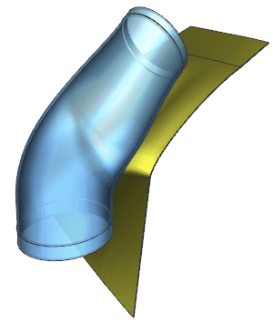

Set the distance measurement dialog box
-
Open gwy1_85_measurements_1

-
Choose Analysis→Measure Distance.
-
On the dialog box rail, click Reset
 .
.
-
From the Type list, choose Between Object Sets.
-
In the Associative Measure and Checking group, select the Associative
 check box.
check box.
-
On the dialog box rail, click Dialog Options
 and make sure Measure Distance (More) is selected.
and make sure Measure Distance (More) is selected.
-
In the Results Display group, from the Annotation list, choose Show Dimension.